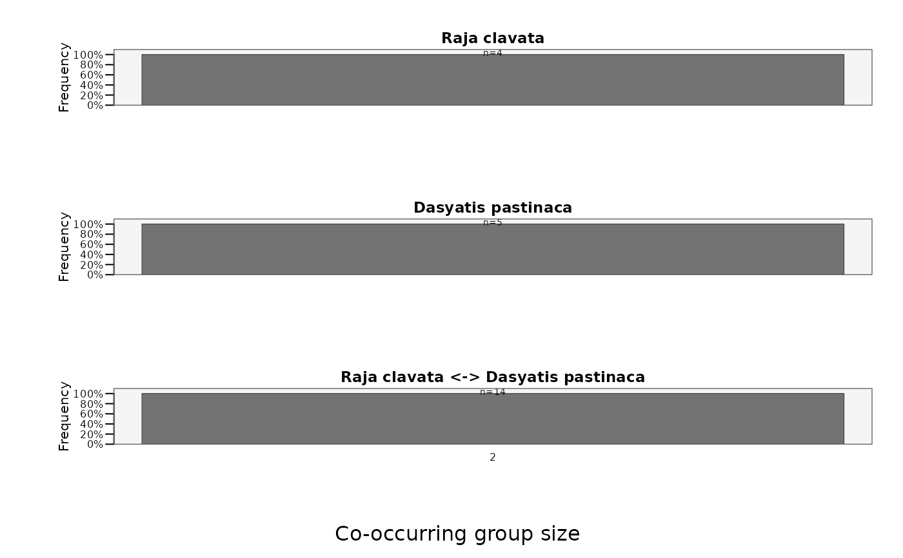

Plot the distribution of co-occurring group sizes
Source:R/plotGroupSizeDistribution.R
plotGroupSizeDistribution.RdComputes and plots the frequency distribution of co-occurring group sizes - how
often 2, 3, 4, ... individuals were detected together (at the same station within a time bin) over
the study. It is the aggregation-size view of co-occurrence, complementing the pairwise view
(plotAssociations) and the per-location view
(plotStationStats with type = "co-occurrences"). The distribution can be split by a
time-bin variable (e.g. diel phase) into a stacked bar chart, and computed within/between animal
classes via id.groups and group.comparisons.
Usage
plotGroupSizeDistribution(
data,
id.col = NULL,
timebin.col = NULL,
station.col = NULL,
id.groups = NULL,
group.comparisons = "all",
split.by = NULL,
levels.order = NULL,
color.pal = NULL,
background.color = "grey96",
annotate = TRUE,
main = NULL,
legend = TRUE,
legend.pos = "topright",
legend.horiz = FALSE,
cex = 1,
ncol = 1,
file = NULL,
width = NULL,
height = NULL,
res = 300
)Arguments
- data
A
mobyDataobject or a data frame of binned detections.- id.col
Name of the column containing animal IDs. Defaults to
"ID".- timebin.col
Name of the column containing time bins (in POSIXct format). Defaults to
"timebin".- station.col
Name of the column containing station/receiver IDs. Defaults to
"station".- id.groups
Optional named list of ID groups (e.g. species), each drawn in its own panel.
- group.comparisons
For
id.groups:"within"(intra-class),"between"(inter-class pairs) or"all"(both). Defaults to"all".- split.by
Optional name of a time-bin variable (e.g. diel phase, season) by which to split each distribution into a stacked bar. If NULL (default), the distribution is computed over the whole study.
- levels.order
Optional integer vector giving the preferred stacking order of the
split.bylevels.- color.pal
Fill colour(s): one per
split.bylevel (or a single colour whensplit.byis NULL). If NULL, a colourblind-safe palette is used.- background.color
Panel background colour. Defaults to "grey96".
- annotate
Logical; annotate each bar with its total count (
n=). Defaults to TRUE.- main
Optional overall title.
- legend
Logical; draw the
split.bylegend. Defaults to TRUE.- legend.pos
Keyword position for the legend. Defaults to "topright".
- legend.horiz
Logical; draw the legend horizontally. Defaults to FALSE.
- cex
Global expansion factor for all plot text. Defaults to 1.
- ncol
Number of columns in the panel layout. Defaults to 1.
- file
Optional output file. If
NULL(the default), the figure is drawn on the current graphics device - the usual interactive behaviour. If a file path is supplied, moby opens a graphics device chosen from the file extension (.pdf,.svg,.png,.jpg/.jpeg,.tif/.tiffor.bmp), draws the figure to it, and closes the device automatically (also if an error occurs). For multi-page or batch workflows, keepfile = NULLand manage the device yourself (e.g.pdf(...); plot...(); dev.off()).- width, height
Output size in inches. Used only when
fileis supplied. IfNULL(default), a size is derived from the figure's structure (e.g. the number of individuals or panels). These defaults are sensible starting points, not guarantees: dense or unusual figures may still need you to setwidth/heightexplicitly. The two can be set independently.- res
Resolution in pixels per inch, for raster formats only (
.png,.jpg,.tif,.bmp); ignored for vector formats (.pdf,.svg). Used only whenfileis supplied. Defaults to 300.
Value
Invisibly, a tidy data frame of the plotted distribution (columns series, group_size,
split_level, count, freq).
Details
The input is standard detection data (a mobyData or a data frame); the wide
time-bin x individual table needed for co-occurrence is built internally via
createWideTable. For each time bin, clusters of individuals sharing a station are
found and their sizes tallied. When id.groups is set, a "within" comparison counts clusters of
same-class individuals and a "between" comparison counts clusters spanning 2+ classes (checked
per cluster). Bar height is the overall frequency of each group size (as a percentage of all
co-occurrence events in that panel); split.by partitions each bar by a time-bin category.
The computed distribution is returned invisibly as a tidy data frame.
Note
The layout and legend are sized in inch units, so the figure stays consistent across datasets and graphics devices.
Examples
# Frequency of co-occurring group sizes (one panel per ID group in 'rays')
plotGroupSizeDistribution(rays)
#> Warning: - 'id.col' converted to factor.
#>
#> Co-occurring group-size distribution
#> ------------------------------------------------------
#> Individuals: 8
#> Time bins: 2,130
#> Groups: 2 (all -> 3 series)
#> Group sizes: 2 to 2
#> Co-occurrences: 23
#> ------------------------------------------------------
